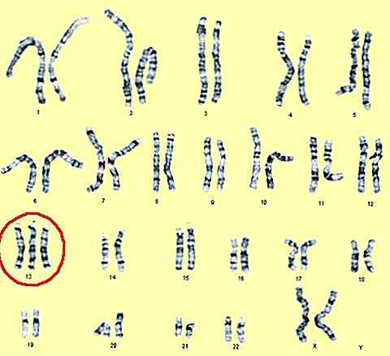
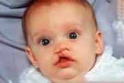

Genetica umană
Sindromul Patau
Trisomia 13 sau sindromul Patau este o boala genetica rara care se manifesta prin prezenta unui cromozom 13 in plus in fiecare celula. Este asociata cu dizabilitati intelectuale severe si numeroase anomalii fizice


Din nefericire, nu exista tratament pentru aceata boala.
Exista 3 forme ale acestui sindrom, dintre care trisomia 13 completa este cea mai comuna si cea mai grava forma:
- Trisomia 13 completa: fiecare celula a organismului are trei copii ale cromozomului 13. Bebelusii cu aceasta forma prezinta dizabilitati complexe.
- Trisomia 13 mozaicata: unele celule au doua copii ale cromozomului 13, cum se intampla in mod normal, iar alte celule prezinta trei copii ale cromozomului 13
- Trisomia 13 partiala: in toate celulele corpului exista un fragment in plus al cromozomului 13. Trisomia 13 este o boala cromozomiala rara, fiind identificata la aproximativ 2 din 10.000 de nasteri. Desi femeile de orice varsta pot avea un copil cu trisomia 13, sansele cresc odata cu varsta femeii.
Oricine poate avea un bebelus cu trisomia 13. In majoritatea cazurilor nu este o afectiune familiala. Este mult mai probabil sa ai un bebelus complet normal si sanatos in viitoarea sarcina decat sa ai un bebelus cu trisomia 13.
Exista si posibilitatea efectuarii unui test cromozomial pentru a vedea daca afectiunea este legata de ceea ce se numeste o translocatie a cromozomilor mamei.